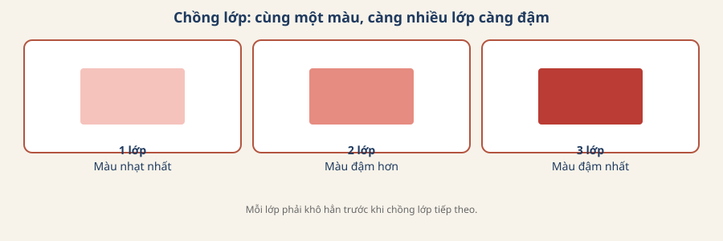

Chồng lớp trong suốt (glazing): xây chiều sâu từng lớp mỏng
Tác giả: Ruler
Bạn đã biết vẽ trên giấy khô ở bài "Vẽ trên giấy khô (wet-on-dry)": tô màu ướt lên giấy khô, đợi khô, tô lớp khác lên trên. Chồng lớp trong suốt, gọi là glazing, là cách dùng chính kỹ thuật đó để xây dựng một bức tranh. Bạn tô một lớp màu trong thật mỏng, đợi khô hẳn, rồi tô một lớp màu trong khác lên trên. Ánh sáng đi qua cả hai lớp, phản chiếu lên giấy trắng bên dưới rồi quay lại mắt bạn, nên màu chồng lớp trông sáng và có chiều sâu hơn màu bạn pha sẵn trên khay. Bài này dạy bạn chọn màu nào để chồng lớp, 6 bước chồng lớp đúng, và cách tự làm bảng chồng lớp của riêng mình. Bài này dùng đúng bộ đồ tối thiểu ở bài bộ đồ: giấy 300 gsm cold press, cọ tròn cỡ 8 và cỡ 4, hộp pan 12 màu.
Glazing là gì, khác wash ở điểm nào
Glazing là tô một lớp màu trong mỏng lên trên một lớp màu đã khô hẳn, để lớp dưới vẫn nhìn thấy qua lớp trên. Louise De Masi viết rằng khi bạn chồng lớp, bạn tô một lớp màu trong suốt mỏng lên lớp màu khô trước đó với mục đích làm thay đổi hoặc tăng cường lớp bên dưới. Bạn có thể chồng nhiều lớp cùng một màu để tăng độ đậm, hoặc chồng một màu khác lên trên để tạo ra màu mới. Watercolor Daily viết rằng hai lớp màu trộn lẫn trong mắt người xem thay vì trộn trên khay, và giấy trắng vẫn sáng lên qua cả hai lớp.
Bạn đừng nhầm glazing với wash. De Masi giải thích rằng wash là lớp màu bạn tô để tạo tông và màu nền chung cho bức tranh, còn glaze là lớp màu trong bạn tô lên trên để thay đổi hoặc tăng cường lớp bên dưới. Wash là lớp đầu tiên, glaze là những lớp tiếp theo. Bạn tô một wash vàng nhạt làm nền cho cả bức tranh, rồi bạn chồng lớp xanh dương nhạt lên một phần để tạo bóng, chồng lớp đỏ nhạt lên một phần khác để tạo điểm ấm. Mỗi lớp glaze đều có mục đích riêng: làm đậm, làm đổi màu, làm dịu, hoặc tạo bóng.
Watercolor Affair viết rằng độ trong của màu nước đến từ việc ánh sáng đi qua lớp màu, phản chiếu lên giấy trắng bên dưới rồi quay lại mắt người xem, và chồng lớp giữ được độ trong đó khi lớp dưới đã khô hẳn. Đó là lý do vì sao một bức tranh chồng lớp trông sáng và có chiều sâu: ánh sáng không chỉ phản chiếu từ bề mặt, mà đi qua nhiều lớp màu rồi mới quay lại. Bạn càng chồng nhiều lớp đục, ánh sáng càng ít đi qua, bức tranh càng tối và mất sáng. Bạn giữ được độ sáng bằng cách dùng màu trong và lớp mỏng.
Chọn màu nào để chồng lớp: trong, bám màu, một sắc tố
Không phải màu nào cũng chồng lớp tốt. Watercolor Daily viết rằng toàn bộ kỹ thuật chồng lớp phụ thuộc vào giấy khô và màu trong. Có ba tính chất của màu quyết định nó chồng lớp tốt hay không: độ trong, độ bám màu và số lượng sắc tố.
Độ trong: lớp dưới phải nhìn thấy được qua lớp trên. Watercolor Daily viết rằng màu trong suốt cho giấy trắng và lớp màu bên dưới sáng lên qua nó, còn màu đục nằm trên và che mất lớp dưới. Daniel Smith xếp Phthalo Blue (PB15:3), Phthalo Green (PG7), Quinacridone Rose (PV19) và French Ultramarine (PB29) là màu trong suốt, còn Hansa Yellow Medium (PY97) và Pyrrol Scarlet (PR255) là màu trong một phần, vẫn chồng lớp tốt khi tô mỏng. Màu đục như các màu cadmium và hầu hết màu trắng thì không chồng lớp tốt. De Masi khuyên bạn chọn màu trong suốt thay vì màu đục khi chồng lớp.
Độ bám màu: lớp dưới phải nằm yên khi bạn tô lớp trên. Watercolor Daily viết rằng màu bám màu (staining) nằm yên sau khi khô: bạn có thể chồng lớp lên trên, hoặc tô qua tô lại vài nét, mà màu dưới không tan ra và trộn vào lớp mới. Các màu phthalo, quinacridone và Hansa Yellow nằm trong danh sách màu bám màu của Daniel Smith. Màu không bám màu, đặc biệt là màu có hạt lắng (sedimentary), sẽ tan ra khi bạn tô lớp trên lên, để lại vết xước trong lớp dưới — đó là thứ người ta gọi là màu đục (mud). Vì vậy lớp đầu tiên nên là màu trong và bám màu, còn lớp trên có thể là gần như bất kỳ màu mỏng nào.
Một sắc tố: màu pha sẵn từ nhiều sắc tố dễ đục hơn. De Masi khuyên bạn dùng màu một sắc tố khi chồng lớp, vì một số màu được làm từ nhiều hơn một sắc tố, và trộn thêm sẽ làm màu đục. Bạn kiểm tra nhãn màu hoặc bảng màu của hãng: mỗi màu ghi mã sắc tố của nó, ví dụ PB15:3 hay PV19. Màu chỉ có một mã là màu một sắc tố. Trong hộp pan 12 màu của bạn, 6 màu gốc ấm và lạnh ở bài pha màu đều là màu một sắc tố, nên bạn dùng chính chúng để chồng lớp.
Bạn ghi nhớ một quy tắc nữa của Watercolor Daily: màu bám màu chồng lên màu bám màu ở độ đậm cao sẽ cho màu tối và chết, ví dụ Phthalo Blue đậm chồng lên Alizarin Crimson đậm cho màu xanh tối và chết. Nếu cả hai màu đều là màu bám màu, bạn giữ ít nhất một màu thật mỏng. Ngược lại, màu có hạt lắng chồng lên màu bám màu lại cho ánh sáng lấp lánh của lớp dưới xuyên qua, đó là lý do họa sĩ Caroline Buchanan (theo hướng dẫn của Daniel Smith được Watercolor Daily trích dẫn) đặt một lớp ultramarine hoặc cerulean thứ hai lên trên lớp đầu tiên đã bám màu trong mọi bức vẽ bầu trời.
6 bước chồng lớp đúng
Watercolor Daily hướng dẫn chồng lớp thành 6 bước. Bạn làm theo đúng thứ tự này, không bỏ bước nào, đặc biệt là bước chờ khô.

Sơ đồ minh họa tự vẽ — không phải ảnh chụp. Cùng một màu đỏ: một lớp cho màu nhạt, hai lớp cho màu đậm hơn, ba lớp cho màu đậm nhất.
Bước 1: lên kế hoạch từ nhạt đến đậm. Bạn quyết định màu nào tô trước, màu nào tô sau. Watercolor Daily viết rằng bạn bắt đầu với lớp màu nhạt nhất, vì màu trong suốt hiện ra như kính màu trên nền giấy trắng. Vàng dưới xanh dương cho xanh lá, nhưng xanh dương dưới vàng cho xanh lá xỉn và xám hơn. Bạn vẽ nháp thứ tự các lớp ra giấy trước khi tô: lớp nền nhạt nhất, rồi lớp giữa, rồi chi tiết tối nhất. Bạn không thể làm nhạt lại một vùng đã chồng lớp tối, vì màu nước không có màu trắng để sửa, nên bạn luôn đi từ nhạt đến đậm.
Bước 2: tô lớp đầu tiên bằng màu trong và bám màu. Bạn pha một wash loãng của màu trong bám màu, ví dụ Phthalo Blue (PB15:3), Hansa Yellow Medium (PY97) hoặc Quinacridone Rose (PV19), và tô một lượt. Bạn pha nhạt hơn bạn nghĩ mình cần, vì bạn luôn có thể chồng thêm lớp sau. Bạn tô dứt khoát một lượt, không tô đi tô lại.
Bước 3: đợi khô hoàn toàn. Bạn đợi đến khi lớp màu hết bóng nước và mặt sau tờ giấy không còn mát khi bạn chạm tay vào. Watercolor Daily viết rằng với một wash mỏng, thời gian khô khoảng 10 đến 20 phút trong phòng bình thường, lâu hơn với wash ướt. Bạn có thể dùng máy sấy ở mức thấp cho nhanh, nhưng bạn để giấy nguội hẳn trước khi tô lớp tiếp theo. Đây là bước quan trọng nhất: chồng lớp lên lớp còn ẩm là lỗi hay gặp nhất, lớp dưới sẽ tan ra và trộn vào lớp trên thành vệt loang lổ và màu đục.
Bước 4: pha lớp glaze thật mỏng. Bạn pha màu thứ hai trên khay với đủ nước để bạn nhìn thấy khay qua hỗn hợp màu. Watercolor Daily viết rằng lớp glaze quá đậm sẽ che mất lớp dưới thay vì nhuộm màu nó. Bạn thử màu trên giấy nháp trước: bạn tô một vệt lên giấy trắng và nhìn xem giấy trắng có còn thấy qua lớp màu hay không. Nếu không thấy, bạn thêm nước.
Bước 5: tô lớp glaze một lượt. Bạn dùng cọ tròn mềm hoặc cọ mop, nạp đầy màu, chạm lên giấy và kéo wash qua vùng cần tô trong một nét duy nhất, hoặc vài nét không chồng lên nhau. Bạn không tô lại một chỗ đã tô. Watercolor Daily viết rằng tô lại lần thứ hai trên lớp màu còn ướt là điều làm lớp dưới bị xáo trộn. Bạn dùng một cọ riêng cho lớp glaze: bạn pha màu bằng một cọ, rồi đổi sang một cọ mềm sạch chỉ có lớp glaze trong đó, vì cọ còn sót màu trong phần gốc lông sẽ làm rơi màu lạ vào wash.
Bước 6: đợi khô, nhìn, rồi mới chồng tiếp. Bạn để lớp glaze khô, nhìn độ đậm nhạt của vùng đó, và chỉ chồng thêm một lớp mỏng nữa nếu vùng đó cần tối hơn hoặc đổi màu. Bạn dừng lại khi bức tranh vẫn còn sáng. Watercolor Daily viết rằng ba hoặc bốn lớp chồng lên cùng một chỗ thường là giới hạn trước khi độ sáng biến mất. Bạn càng chồng nhiều, màu càng tối và càng đục, nên bạn dừng sớm hơn bạn nghĩ.
Bài tập: làm bảng chồng lớp của riêng bạn
De Masi viết rằng bảng chồng lớp là một công cụ tham khảo quý giá: nó cho bạn thấy màu nào chồng lên màu nào cho kết quả gì, và màu nào bạn nên tránh chồng lên nhau. Bạn làm bảng này một lần, mất khoảng nửa giờ, và dùng nó cho mọi bức tranh sau này.
Bước 1: kẻ bảng. Bạn lấy một tờ giấy 300 gsm cold press, kẻ các dải ngang bằng các màu trong hộp của bạn: mỗi màu một dải ngang. Bạn ghi tên màu ở đầu mỗi dải. Bạn dùng 6 màu gốc ấm và lạnh trong bài pha màu, vì đó là những màu bạn dùng nhiều nhất.
Bước 2: đợi khô hẳn. Bạn đợi các dải ngang khô hoàn toàn, sờ mặt sau tờ giấy thấy không còn mát.
Bước 3: tô các dải dọc chồng lên. Bạn tô các dải dọc bằng cùng các màu đó, chồng lên các dải ngang. Mỗi ô giao nhau là một màu chồng lớp: bạn sẽ thấy vàng chồng lên xanh dương cho xanh lá, đỏ chồng lên xanh dương cho tím, vàng chồng lên đỏ cho cam — nhưng mỗi cặp cho một sắc khác nhau, và có cặp cho màu đục mà bạn sẽ tránh.
Bước 4: ghi chú. Bạn ghi chú dưới bảng: cặp nào cho màu sạch và sáng, cặp nào cho màu đục, cặp nào cho màu tối đẹp. Bạn dán bảng này lên tường chỗ bạn vẽ, hoặc kẹp vào sổ tập vẽ. De Masi viết rằng bà vẫn tham khảo bảng của mình thường xuyên, vì nó giúp bà lên kế hoạch chồng lớp mà không phải đoán.
Bạn làm bảng chồng lớp này trong buổi tập đầu tiên của tuần, trước khi vẽ bức tranh nào. Bạn sẽ thấy ngay vì sao bài pha màu dạy bạn quy tắc "hai màu nghiêng về phía nhau cho màu sạch": cùng quy tắc đó áp dụng cho chồng lớp, vì chồng lớp cũng là trộn màu, chỉ khác là trộn trên giấy thay vì trên khay.
Chồng lớp dùng để làm gì trong một bức tranh
Bạn đã biết cách chồng lớp, giờ bạn cần biết khi nào dùng nó. De Masi và Watercolor Daily nêu bốn cách dùng chính.
Tạo chiều sâu và độ sáng. Đây là cách dùng cơ bản nhất. Bạn xây dựng bức tranh từ nhạt đến đậm, mỗi lớp thêm một chút chiều sâu. De Masi viết rằng chồng lớp giúp thêm chiều sâu, tăng độ sáng và cho phép tạo ra những thay đổi tinh tế về màu sắc và tông màu. Bạn tô nền trời bằng một lớp xanh nhạt, đợi khô, chồng thêm một lớp xanh đậm hơn ở phía trên, rồi một lớp nữa ở góc xa nhất. Bầu trời của bạn sẽ có chiều sâu mà một wash duy nhất không làm được.
Tạo bóng mà không làm mất màu vật. Watercolor Daily viết rằng chồng lớp là kỹ thuật vẽ bóng: một lớp glaze mỏng màu xanh dương lên trên một vật đã khô sẽ làm vật tối đi mà vẫn giữ nguyên màu của nó. De Masi cũng dùng cách này: bà vẽ một cành cây, đợi khô, rồi chồng lớp xanh dương lên trên để tạo bóng đổ. Bạn không cần pha màu bóng riêng, bạn chỉ cần chồng một lớp màu tối trong lên trên vật.
Làm dịu một vùng quá sáng. De Masi viết rằng bạn có thể chồng lớp màu bổ sung (màu đối diện trên vòng màu) để làm dịu một vùng quá sáng: xanh lá trong suốt chồng lên hoa hồng quá sáng sẽ làm màu hoa dịu xuống một chút. Cặp màu bổ sung là đỏ và xanh lá, tím và vàng, xanh dương và cam. Bạn chồng một lớp thật mỏng màu bổ sung lên vùng quá sáng, và vùng đó sẽ dịu đi mà không chuyển sang xám, miễn là lớp glaze đủ mỏng. Bạn thử trên giấy nháp trước, vì chồng quá đậm sẽ làm vùng đó tối và chết.
Tăng độ đậm dần mà không cần đoán. Watercolor Daily viết rằng chồng lớp cho bạn kiểm soát: bạn nhìn độ đậm sau mỗi lớp khô, chồng thêm một lớp nếu cần tối hơn, và dừng khi vừa ý. Một wash đậm duy nhất chỉ cho bạn một cơ hội, sai là phải sửa. Chồng lớp cho bạn nhiều cơ hội nhỏ: bạn tô nhạt, nhìn, tô thêm, nhìn, tô thêm. Bạn dừng khi bức tranh vừa đủ đậm, và bạn không bao giờ tô quá đậm trong một lần.
Những lỗi thường gặp khi chồng lớp
Chồng lớp lên lớp còn ẩm. Đây là lỗi hay gặp nhất. Lớp dưới chưa khô hẳn, bạn tô lớp trên lên, lớp dưới tan ra và trộn vào lớp mới, khô thành vệt loang lổ và màu đục. Bạn đợi đến khi mặt sau tờ giấy không còn mát khi chạm tay vào. Bạn dùng máy sấy ở mức thấp nếu vội, nhưng để giấy nguội hẳn rồi mới tô tiếp.
Tô đi tô lại một chỗ. Bạn tô lớp glaze rồi quay lại tô cùng chỗ khi nó còn ướt, lớp dưới bị xáo trộn, đặc biệt khi lớp dưới là màu không bám màu. Watercolor Daily viết rằng bạn tô một lượt rồi để yên, không tô lại. Bạn dùng cọ mềm lớn để một lượt tô phủ hết vùng cần tô, không cần tô lại.
Lớp glaze quá đậm. Bạn pha lớp glaze quá đặc, nó che mất lớp dưới thay vì nhuộm màu nó. Bạn pha mỏng đến mức nhìn thấy khay qua hỗn hợp màu, và thử trên giấy nháp trước. Bạn nhớ quy tắc: lớp glaze là một lớp nhuộm màu, không phải một lớp phủ.
Chồng quá nhiều lớp. Bạn chồng 5, 6 lớp lên cùng một chỗ vì muốn tối hơn, và bức tranh mất sáng, màu đục. Watercolor Daily viết rằng ba hoặc bốn lớp thường là giới hạn. Bạn dừng khi bức tranh vẫn còn sáng, và bạn chấp nhận rằng màu nước không tối được như màu acrylic. Bạn muốn tối hơn nữa thì bạn dùng màu đậm hơn ở lớp cuối, không chồng thêm lớp.
Chồng màu đục lên nhau. Bạn chồng màu đục, ví dụ màu cadmium, lên nhau nhiều lần, và các lớp dày lên thành màu phấn đục. Watercolor Daily viết rằng màu đục chồng lên nhau nhiều lần sẽ dày và đục. Bạn giữ màu đục cho một lớp cuối duy nhất, hoặc bỏ hẳn khỏi vùng chồng lớp.
Thứ tự sai: màu tối trước, màu nhạt sau. Bạn tô màu tối trước rồi muốn chồng màu nhạt lên trên để làm sáng lại, nhưng màu nhạt không làm sáng được màu tối trong màu nước. Bạn luôn lên kế hoạch từ nhạt đến đậm, và bạn vẽ thứ tự các lớp ra giấy trước khi tô.
Kết luận
Chồng lớp trong suốt là kỹ thuật bạn sẽ dùng trong mọi bức tranh màu nước, từ bức nhỏ cỡ bưu thiếp đến bức lớn. Bạn nhớ ba điều: lớp dưới phải khô hẳn, màu phải trong và mỏng, và bạn luôn đi từ nhạt đến đậm. Bạn làm bảng chồng lớp của riêng mình trong buổi tập đầu tiên, và bạn sẽ không bao giờ phải đoán xem màu nào chồng lên màu nào cho kết quả gì nữa.
Bài tiếp theo trong website này là bài "5 bức hoa lá cỡ bưu thiếp", nơi bạn dùng chính kỹ thuật chồng lớp này để tạo chiều sâu cho cánh hoa và lá. Bạn đọc bài đó khi đã làm xong bảng chồng lớp, vì khi đó bạn đã biết cặp màu nào cho hoa hồng sáng và cặp nào cho lá xanh trong.
Nguồn tham khảo
- Watercolor Daily, "Glazing Watercolor Technique: 6 Steps to Layer Clean Color" — glazing là tô một wash trong mỏng lên lớp màu đã khô hẳn, hai lớp trộn trong mắt thay vì trên khay; màu trong suốt và màu bám màu chồng lớp tốt (Phthalo Blue PB15:3, Phthalo Green PG7, Quinacridone Rose PV19, French Ultramarine PB29 trong suốt; Hansa Yellow Medium PY97 và Pyrrol Scarlet PR255 trong một phần); màu bám màu nằm yên khi chồng lớp, màu có hạt lắng tan ra và làm đục; 6 bước: lên kế hoạch từ nhạt đến đậm, tô lớp đầu bằng màu trong bám màu, đợi khô hẳn (wash mỏng khoảng 10–20 phút), pha lớp glaze mỏng, tô một lượt, đợi khô rồi mới chồng tiếp; giới hạn 3–4 lớp; bảng chồng lớp: dải ngang rồi dải dọc chồng lên; dùng glaze màu bổ sung để làm dịu vùng quá sáng; một cọ riêng cho lớp glaze (truy cập 23/11/2026): https://www.watercolordaily.com/blog/glazing-watercolor-technique-guide
- Louise De Masi, "How to do the Watercolour Glazing Technique" — glazing là tô một lớp màu trong mỏng lên lớp màu khô trước đó để thay đổi hoặc tăng cường lớp dưới; chồng cùng màu để tăng độ đậm, chồng màu khác để tạo màu mới; đợi khô hẳn (có thể dùng máy sấy cho chắc chắn khô), pha màu loãng cho chảy dễ dàng; dùng cọ lớn mềm, chạm nhẹ, ít nét tô; không chồng quá nhiều lớp vì dễ đục; dùng màu một sắc tố; dùng màu bổ sung để làm dịu vùng quá sáng (xanh Viridian lên hoa hồng); dùng glazing để tạo bóng đổ (xanh dương lên cành khô) và tăng độ đậm dần; làm bảng chồng lớp bằng cách tô dải ngang rồi dải dọc chồng lên (truy cập 23/11/2026): https://www.louisedemasi.com/tips/2023/6/28/how-to-do-the-watercolour-glazing-technique
- Watercolor Affair, "Watercolor Transparency: A Beginner's Guide" — ánh sáng đi qua lớp màu trong, phản chiếu lên giấy trắng; chồng lớp khi lớp dưới đã khô hẳn; làm từ nhạt đến đậm (truy cập 23/11/2026): https://www.watercoloraffair.com/watercolor-transparency/